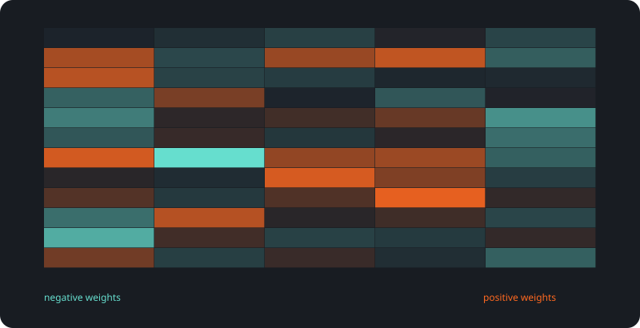

ANTILLIA / APPLIED INTELLIGENCE
Od danych
do działającego rozwiązania.
Sześć projektów machine learning i lokalny asystent wiedzy. Poznaj ich zadania, architekturę, mierzone wyniki i możliwości zastosowania.

DemandCast
Zbudowaliśmy laboratorium prognoz, które zamienia siedem dni historii w porównywalne scenariusze na kolejne 24 godziny. Z modelem bazowym, siecią GRU i wynikami, które można odtworzyć.

IntentRoute
Zbudowaliśmy klasyfikator, który odczytuje treść zgłoszenia i wskazuje najbardziej prawdopodobną intencję spośród 77 kategorii bankowych. Z alternatywami i możliwością wstrzymania automatycznej decyzji.

TerraVision
Zbudowaliśmy aplikację, która rozpoznaje dziesięć klas pokrycia terenu na wycinkach zdjęć satelitarnych. Do wyniku dodaje rozkład klas i Grad-CAM, aby można było zajrzeć do zachowania sieci.

MachineSentinel
Zbudowaliśmy lokalny monitor eksperymentalny, który porównuje odczyty pięciu czujników z profilem normalnej pracy. Wynik anomalii ma jawny próg i jest pokazany razem z ograniczeniami modelu.

BasketWise
Zbudowaliśmy silnik rekomendacji, który łączy historię zakupów z rankingiem produktów. Porównuje popularność, podobieństwo koszyków i faktoryzację macierzy na przyszłych zakupach.

ReviewPulse
Zbudowaliśmy analizator opinii, który rozpoznaje pozytywny i negatywny wydźwięk tekstu. Działa lokalnie, obsługuje pojedyncze komentarze i partie CSV, pokazuje także niepewność.

AI Desk
Zbudowaliśmy lokalnego asystenta dokumentów z kontami, rolami i historią rozmów. Odpowiedź łączy z konkretnymi fragmentami, a wyszukiwanie najpierw respektuje uprawnienia użytkownika.